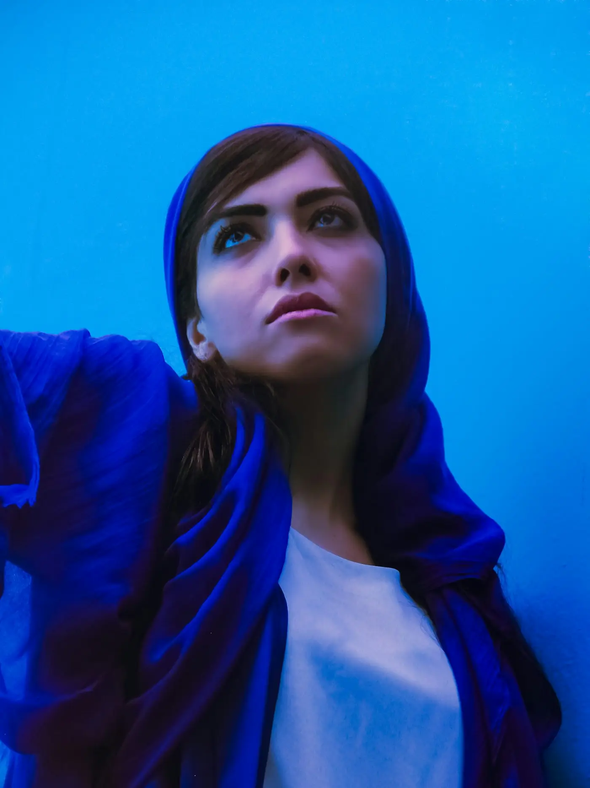

Foto de ejemplo
[Nombre Apellido]
[Especialidad]
[Bio breve: dos o tres líneas sobre tu recorrido y lo que más te gusta hacer dentro del estudio.]

Somos ENTRE, un estudio creativo independiente formado por dos personas. Unimos estrategia, comunicación y diseño para crear marcas y proyectos con personalidad.
Ver proyectosSomos un estudio creativo independiente. Nos movemos entre la estrategia, la comunicación y el diseño para dar forma a ideas que tengan algo que decir.
Pensamos antes de diseñar, y diseñamos pensando en dónde va a vivir cada cosa: una marca, una campaña, una web o un cartel en la calle.
Somos dos. Quien te escucha el primer día es quien revisa el último archivo, así que nada se pierde por el camino.
Marcas, campañas, webs y piezas gráficas. Cada proyecto es distinto, así que cada uno se ve distinto.
Contenido de ejemplo — sustituir por proyectos reales
Cuatro áreas que se mezclan entre sí. Casi ningún proyecto se queda en una sola.
Antes del logo, la conversación: quién eres, qué quieres decir y a quién.
Estrategia de marca · Posicionamiento · Naming · Identidad visual · Universos gráficos · Branding y rebranding
Le damos forma visual a las ideas, del cartel al catálogo y de la campaña al stand.
Diseño gráfico · Dirección de arte · Diseño editorial · Campañas visuales · Material corporativo · Eventos · Creatividades digitales
Webs y piezas digitales que se ven bien y, además, funcionan.
Diseño web · Desarrollo web · Landing pages · Ecommerce · Experiencias digitales · Contenido digital
Qué dices, cómo lo dices y dónde: campañas, redes y contenido con criterio.
Estrategia de comunicación · Campañas · Redes sociales · Comunicación visual · Contenido para marcas
Perfiles complementarios y una misma manera de entender la creatividad. Unimos estrategia, comunicación y diseño para mirar cada proyecto desde dos lados, y nos implicamos en todo el proceso: de la primera idea al resultado final.
[Especialidad]
[Bio breve: dos o tres líneas sobre tu recorrido y lo que más te gusta hacer dentro del estudio.]
[Especialidad]
[Bio breve: dos o tres líneas sobre tu recorrido y lo que más te gusta hacer dentro del estudio.]
Sin fórmulas mágicas. Cuatro pasos que se repiten las veces que haga falta.
Nos sentamos contigo a entender el proyecto: qué necesitas, para quién es y qué tiene que conseguir.
Buscamos el enfoque. Probamos caminos, descartamos muchos y nos quedamos con el que tiene sentido.
Desarrollamos la identidad, el diseño y las piezas. Aquí es donde las ideas empiezan a verse.
Lo llevamos a cada soporte (pantalla, papel, redes, espacio) y nos aseguramos de que funcione en todos.
(03) — Contacto
Cuéntanos qué tienes entre manos: una marca nueva, una web, una campaña o una idea a medio hacer. Todo empieza con una conversación.
hola@tuestudio.com